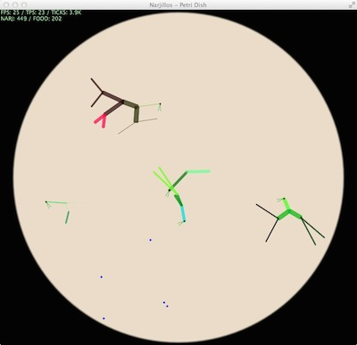

Fun with evolution
This project is maintained by nusco
Narjillos are artificial creatures that mutate and evolve in a virtual microscope dish, under the pressure of natural selection. They don't have any predefined strategy for "swimming", apart from swinging their bodies around in response to an external target. Yet, they tend to evolve good swimming behaviours over time.

To put a Petri dish full of narjillo eggs under your microscope, you need Java 8 and git. Install Narjillos:
git clone https://github.com/nusco/narjillos.git
cd narjillos
Then start a Petri dish with the petri command:
petri no-persistence
The first run installs the Gradle build tool and then builds the system, so it takes some time. The following runs start faster.
Move around with your mouse: click anywhere to center, double-click to lock on a specific narjillo, and zoom in/out by scrolling. You can also move the microscope with your cursor keys.
To shift the speed up, press P. To shift it down, press O.
To turn the lamp on/off, press L. With the lamp off, high speed is faster (because the program doesn't need to render the creatures).
If you have trouble distinguishing the shapes of narjillos, try infrared light. It makes things more visible, though not as pretty as a regular lamp does. You can toggle infrared light by pressing I.
There are three main ingredients to the Narjillos recipe: phenotypic variation, selection and mutation. They sound difficult, but you probably know about all three of them already. Let me tell how they work and what's their final result.
When you start an experiment, the program generates a few hundreds eggs, containing different strands of DNA. Each DNA is a random sequence of bytes. Each byte is a "gene", and genes are collected into "chromosomes".
Inside the egg, each DNA strand goes through a process called "embryology", which generates the physical body of a baby narjillo. Each chromosome roughly generates a segment in the narjillo's body, and the genes in the chromosome dictate that segment's appearance and behavior: its color, size, angle, and so on.
The DNA is also called the genotype, and the physical body is also called the phenotype --- so you can say that "the genotype generates the phenotype". Identical genotypes always generate identical phenotypes. Similar genotypes tend to generate similar phenotypes. Very different genotypes tend to generate very different phenotypes.
All the eggs generated in the beginning are collected in a dish under your microscope. They soon hatch, giving birth to cute little baby narjillos. The babies are small in the beginning, but they keep growing until they reach their adult form. The dish is also filled with food --- the blue dots. More food keeps spawning slowly as the experiment goes on.
Narjillos try to reach the food by swimming. You can look at their "mouths" (the thin green lines) to see which direction they're trying to go. Narjillos don't think --- they just oscillate mechanically in response to the direction of their target. These oscillations push them around in the dish.
Some narjillos are decent swimmers, but most are not. You'll see many who cannot even move, or tend to move in the opposite direction they're aiming at. Those who cannot reach food will eventually get exhausted and die.
Narjillos that are bigger or faster have the potential to move quicker, but they tend to consume more energy as they push their bodies around the dish. The maximum energy of a narjillo also decreases with age, so even narjillos who can't move will eventually lose energy and die.
Look at a narjillo's eye color to get a clue about its energy level. Fully healthy, energized narjillos have a bright green eye, that becomes darker as they get exhausted. Also, they become transparent once they're nearing death.
(A note for Artificial Life connoisseurs: narjillos have no "fitness function". The fitter narjillos are simply the ones that happen to be better at reaching food.)
Each time a narjillo eats a piece of food, its energy rises. If the energy is over a certain amount, the narjillo uses it to lay an egg that contains a full copy of the narjillo's own genotype. The egg hatches after a short while, giving birth to the phenotype --- a new baby narjillo.
However, here is a twist: when the parent's genotype is copied into the egg, random errors can happen. These errors (called "mutations") mean that, while the copy probably resembles the original, it also has a few differences --- which typically result in a child with slightly different body shape, movement style, or color.
A child can also gain entirely new chromosomes, or lose some of the chromosomes of its parent. This generally results in more, or fewer, segments in the child's body compared to the parent. However, the same old rule applies: the child's genotype is similar to the parent's genotype, so the child is going to resemble the parent. As grandma used to say, "the apple doesn't fall far from the tree".
Phenotypic variation, Selection, Mutation... done! Now that you know about the three ingredients, let's put them together.
Over time, narjillos who happen to be good at swimming tend to survive longer and reproduce more often than narjillos who are not as good. Because they reproduce, they generate offspring that are themselves good swimmers --- but because of mutations, the offspring can be a little better, or a little worse, than their parents. The better offspring tend to survive longer and reproduce faster than the worse offspring, and the cycle continues: bad swimmers tend to go extinct, while better swimmers tend to prosper, and go on to generate children that are even better than themselves.
We have a single word to describe this entire process: evolution.
After a few tens of minutes of running an experiment (at high speed), you'll likely see one "family" of related narjillos emerge and slowly take over the pond, while less successful genotypes go extinct. As you keep the program running, possibly for a few hours or days, this dominating DNA strand will subtly mutate to generate bodies that are better and better at swimming --- sometimes by using movement strategies that I myself wouldn't have expected when I wrote this program.
The resulting creatures are neither a result of my design, nor emerging by blind luck. On the one hand, I didn't design the individual creatures - I just created the environment where their genes can evolve. On the other hand, you probably won't be able to generate good swimmers by shuffling genes randomly, as the program does on startup. There are literally more possible narjillos body plans than grain of sands in a desert - vastly more so - and by far the most of them are no good at swimming. This is neither a case of intelligent design, nor a case of blind luck. The narjillos are evolving their ability to swim well.
A few advanced uses in case you really get serious with this program:
You can start an experiment with the experiment command instead of the petri command, to run it without graphics. It's even faster than petri with lights off.
If you leave out the no-persistence switch, then both petri and experiment will save the experiment to an .exp file at regular intervals. If you interrupt the experiment for any reason (like restarting your computer), you can pass this file as a parameter to either experiment or petri, and pick up the experiment from the last save. This allows you to run very long experiments. You can start an experiment in experiment, run it for a while, interrupt it and then pick it back up in petri to see what happened.
Experiments are deterministic. Each experiment has a name composed of the current git commit (the revision of Narjillos that you're using), plus a random seed. Experiments with the same identifier will give exactly the same results over time.
Very long experiments need a lot of memory to store the history of the gene pool, so both petri and experiment allocate a 4 Gb heap when starting the JVM. If you want to allocate less memory, you can edit the -Xmx4096M and -Xms4096M arguments in the two scripts.
The ultimate goal of Narjillos is to trigger an evolutionary arms race: two or more distinct "species" of creatures becoming more and more complex by leapfrogging over each other.
That's a long way to go. In the current version, narjillos do not interact with other narjillos, apart from stealing food from each other --- so an arms race can hardly happen. However, I'm having a lot of fun along the way.
Narjillos was inspired by Jeffrey Ventrella's beautiful GenePool. "Inspired" is an understatement: Narjillos started its life as a GenePool clone. Narjillos has a different goal than GenePool (exploring arms races rather than exploring sexual selection), and it adopts different strategies. However, you should definitely check out GenePool and Ventrella's other works if you like the concept of Narjillos.
And of course, I'd never have thought of anything like this program if I hadn't been an avid reader of Richard Dawkins. The Selfish Gene can be a life-changing book. If you haven't read it, do yourself a favor and buy a copy now.